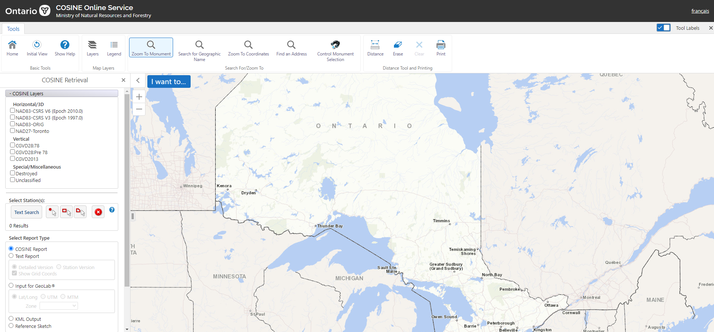

Geodesy
Overview
Geodesy is the science of measuring and representing the orientation of the Earth. Understanding the curvature of the Earth changes by different projections on a map. Acknowledge the issues involve in measuring and mapping of the Earth. Understand how projections work and how different countries and places use different projections.
Intended Learning Outcomes
Sequence of Class activities:
Assignment 1: To gain an understanding on how to differentiate Ontario Control Survey Markers across the province and knowing how to search these markers on the database called COSINE. Learn how to read and understand COSINE monument reports.
Assignment 2: This assignment allows student to know how to read National Topographic System maps sheet and knowing what principal digits are. How to locate a specific feature on a map from coordinates and measure distances between to features. Also, how to determine coordinates from a feature that is shown on a map.

Jackson rendition of a NTS map on belleville
The purpose of these assignments is to help us gain an understanding on how to read map sheets in person and digit maps online, determining coordinates from specific features and vice versa. Also learning how to view different control markers found in Ontario and knowing how to read the reports.